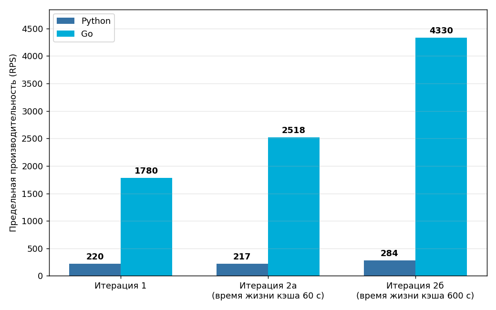
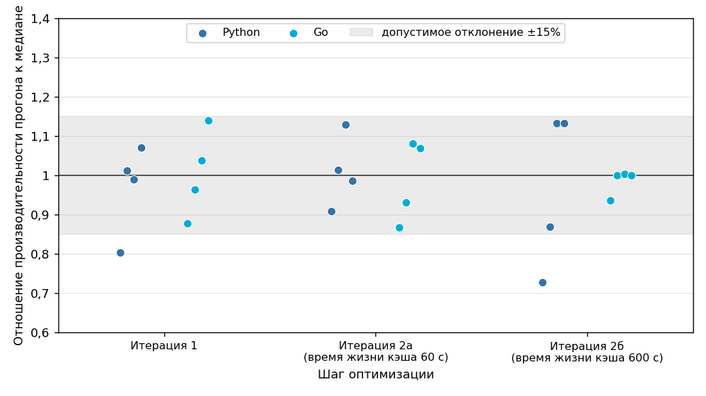
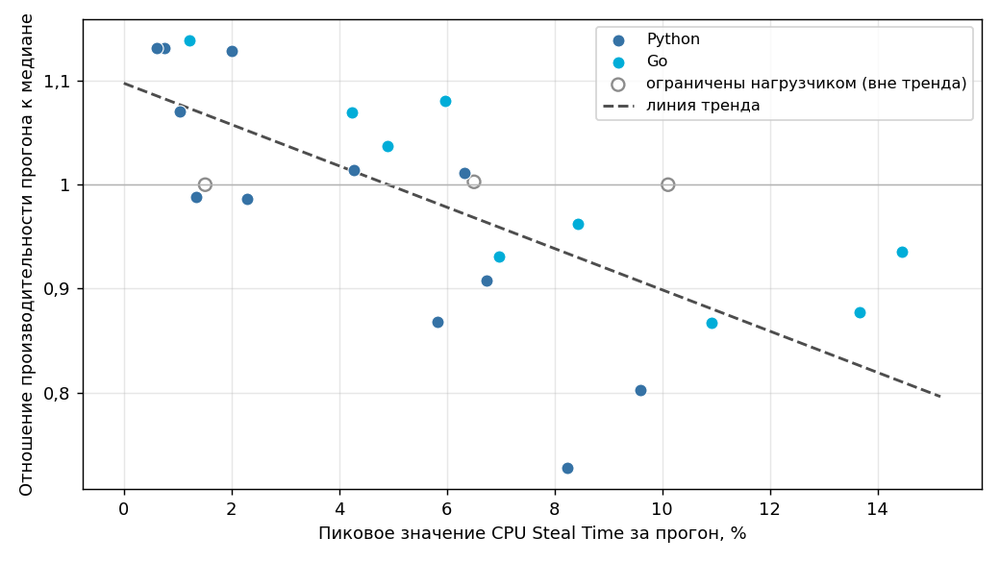

Экспериментальные измерения проведены на выделенном облачном стенде (Timeweb Cloud: 12 виртуальных ядер vCPU с разделением времени, 23 ГБ RAM, Ubuntu 24.04). Каждая конфигурация исследована в рамках четырех независимых запусков; итоговые показатели представляют собой медианные значения. Сбор метрик интенсивности запросов (RPS) и доли ошибок осуществляет генератор нагрузки k6 с экспортом в Prometheus. Процентили времени отклика вычисляются на основе серверной гистограммы. Потребление ресурсов процессора и оперативной памяти как для всей виртуальной машины, так и для отдельных изолированных контейнеров (включая показатели процессорного времени вытеснения — CPU Steal Time), регистрируется системными агентами node-exporter и cAdvisor.
Предельная ёмкость — максимальная интенсивность запросов (запросов в секунду, RPS), которую веб-сервис способен стабильно обрабатывать при соблюдении заданных требований к качеству обслуживания (SLO: 95-й процентиль времени отклика — менее 500 мс, 99-й процентиль — менее 1000 мс, доля ошибок — менее 1 %; подробное описание приведено в разделе 4). Каждая величина в таблице является медианой результатов четырех запусков, а в столбцах диапазона указаны минимальное и максимальное значения, зафиксированные в ходе экспериментов.

| Конфигурация | Python, запр./с (RPS) | Go, запр./с (RPS) | Соотношение Go / Python | Диапазон (Python) | Диапазон (Go) |
|---|---|---|---|---|---|
| Итерация 0* (базовое решение) | ~4 | ~6 | ~1,5× | предельная пропускная способность до сбоя; доля ошибок: Python ~65%, Go ~20% | |
| Итерация 1 | 220 | 1780 | 8,1× | 177–236 | 1561–2027 |
| Итерация 2а (время жизни кэша 60 с) | 217 | 2518 | 11,6× | 197–245 | 2185–2722 |
| Итерация 2б (время жизни кэша 600 с) | 284 | ≥4330 | ≥15,2× | 207–322 | 4049–4342 |
* На итерации 0 предельная ёмкость по критериям SLO не определена — среднее время выполнения запроса без индекса (около 649 мс) превышает допустимый порог 95-го процентиля при любой минимальной нагрузке. Вместо этого приведена пропускная способность до возникновения отказов (максимальная частота запросов в секунду при доле ошибок менее 1 %). По времени отклика обе реализации на итерации 0 практически идентичны, поскольку простаивают в ожидании ответа СУБД. Различие проявляется лишь в устойчивости к перегрузкам и стабильно возрастает по мере устранения узких мест: преимущество Go перед Python по шагам оптимизации составляет соответственно ~1,5, 8,1, 11,6 и ≥15,2.
Метрики производительности при работе на уровне предельной ёмкости (медианные значения по результатам четырех запусков). «Загрузка CPU (сервис)» отражает использование процессорного ядра, выделенного контейнеру приложения. «Память (сервис)» — объём оперативной памяти, потребляемый контейнером приложения (при лимите в 512 МБ). Показатели «Доля попаданий в кэш» и «Активные пользователи» применимы исключительно к конфигурациям итерации 2, содержащим слой кэширования.
| Конфигурация | Язык | p95 времени отклика, мс | p99 времени отклика, мс | Загрузка CPU (сервис), % | Память (сервис), МБ | Доля попаданий в кэш, % | Активные пользователи |
|---|---|---|---|---|---|---|---|
| Итерация 1 | Python | 320 | 594 | 84,5 | 245 | — | — |
| Итерация 1 | Go | 221 | 342 | 97,1 | 231 | — | — |
| Итерация 2а (время жизни кэша 60 с) | Python | 345 | 675 | 86,9 | 248 | 6,0 | 9418 |
| Итерация 2а (время жизни кэша 60 с) | Go | 221 | 369 | 96,8 | 300 | 35,3 | 54403 |
| Итерация 2б (время жизни кэша 600 с) | Python | 385 | 786 | 91,3 | 248 | 19,6 | 16590 |
| Итерация 2б (время жизни кэша 600 с) | Go | 85 | 197 | 92,5 | 346 | 87,2 | 73036 |
Потребление ресурсов инфраструктуры при максимальной нагрузке (медианные значения по четырем запускам) для контейнеров СУБД PostgreSQL, кэша Redis и всей виртуальной машины. Параметр «CPU Steal» отображает долю времени, в течение которого гипервизор не предоставлял процессорное время виртуальной машине из-за загруженности физического сервера (подробнее в разделе 2).
| Конфигурация | Язык | CPU СУБД, % | RAM СУБД, МБ | CPU Redis, % | CPU хоста, % | RAM хоста, МБ | CPU Steal, % |
|---|---|---|---|---|---|---|---|
| Итерация 1 | Python | 22 | 381 | — | 15 | 1851 | 3,8 |
| Итерация 1 | Go | 97 | 169 | — | 31 | 2996 | 6,7 |
| Итерация 2а (время жизни кэша 60 с) | Python | 20 | 190 | 3 | 15 | 1840 | 3,3 |
| Итерация 2а (время жизни кэша 60 с) | Go | 82 | 170 | 12 | 33 | 3666 | 6,5 |
| Итерация 2б (время жизни кэша 600 с) | Python | 19 | 189 | 3 | 15 | 1855 | 3,3 |
| Итерация 2б (время жизни кэша 600 с) | Go | 67 | 170 | 13 | 38 | 4349 | 8,3 |

На графике представлено отношение предельной производительности каждого из четырех запусков к медианному значению соответствующей конфигурации. Основная часть результатов находится в пределах допустимого отклонения ±15%. Отдельные запуски (например, первый, в котором зарегистрирован пик CPU Steal Time) демонстрируют отклонение до ±25%.

Показатель CPU Steal Time отражает долю процессорного времени, недополученного виртуальной машиной из-за конкуренции на гипервизоре. Наблюдается выраженная обратная зависимость: увеличение CPU Steal ведет к пропорциональному снижению производительности. Точки ложатся строго вдоль линии тренда. Результаты Go на итерации 2б (контурные точки) исключены из расчета тренда, так как их производительность лимитировалась возможностями генератора k6, а не ресурсами сервера.
Поскольку обе реализации тестировались на одном физическом сервере последовательно, уровень CPU Steal в различных запусках варьируется. В ходе тестирования Go данный показатель оказался выше (ввиду более высокой пропускной способности Go создает повышенную нагрузку на дисковую и сетевую подсистемы хоста), что могло незначительно снизить максимальные показатели Go. Несмотря на это, зафиксированное соотношение производительности остается устойчивым, поскольку разрыв в эффективности (порядка 8 раз) многократно превышает погрешность, вызванную колебаниями CPU Steal (±25%). В частности, для итерации 1 во всех четырех запусках преимущество Go перед Python сохраняется в узком диапазоне (от 7,7 до 8,8 при медиане 8,1). Повышенный уровень CPU Steal при работе Go позволяет считать полученную оценку соотношения производительности консервативной (нижней) оценкой.
Для каждого этапа приведен профиль времени выполнения приложения (диаграмма Flame Graph) и статистика запросов к СУБД (показатели pg_stat_statements сбрасываются перед каждым нагрузочным тестированием). Данные профилирования служат обоснованием для перехода к следующему шагу.
Пул из 5 соединений, индексы и кэширование отсутствуют. На основе анализа профиля установлено, что большую часть времени занимает ожидание ответа СУБД PostgreSQL (выполняется последовательное сканирование таблиц). Предельная ёмкость стремится к нулю — заданные пороги качества обслуживания нарушаются при минимальной интенсивности запросов. Профиль CPU для Go при этом практически пуст (загрузка ядра около 0,3%), так как сервис простаивает в ожидании СУБД. Это подтверждает, что на начальном этапе главным узким местом является база данных, а не язык разработки. Следующий шаг (итерация 1) — создание индексов и переход на асинхронное взаимодействие.
Распределение процессорного времени в СУБД по типам запросов:
Профиль запросов при нагрузке на реализацию Python:
| Время, мс | Вызовов | Сред., мс | Доля | Запрос |
|---|---|---|---|---|
| 13391.6 | 24 | 557.981 | 96.6% | SELECT movie_id, rating FROM ratings WHERE user_id = ? — формирование персональных рекомендаций |
| 457.9 | 16 | 28.617 | 3.3% | SELECT movie_id, title, avg_rating FROM movies WHERE ratings_count > ? ORDER BY avg_ratin — получение списка популярных фильмов |
| 5.6 | 47 | 0.119 | 0.0% | SELECT movie_id, title FROM movies WHERE movie_id = ANY(ARRAY[?,?,$3,$4,$5,$6]) |
| 1.4 | 8 | 0.173 | 0.0% | SELECT movie_id, title FROM movies WHERE movie_id = ANY(ARRAY[?,?,$3,$4,$5,$6,$7,$8,$9,$ |
| 0.2 | 95 | 0.002 | 0.0% | BEGIN |
| 0.1 | 95 | 0.002 | 0.0% | ROLLBACK |
Профиль запросов при нагрузке на реализацию Go:
| Время, мс | Вызовов | Сред., мс | Доля | Запрос |
|---|---|---|---|---|
| 11422.9 | 20 | 571.145 | 96.4% | SELECT movie_id, rating FROM ratings WHERE user_id = ? — формирование персональных рекомендаций |
| 425.1 | 15 | 28.342 | 3.6% | SELECT movie_id, title, avg_rating FROM movies WHERE ratings_count > ? ORDER BY avg_ratin — получение списка популярных фильмов |
| 7.0 | 56 | 0.125 | 0.1% | SELECT movie_id, title FROM movies WHERE movie_id = ANY(?) |
План выполнения запроса (получение персональных рекомендаций):
QUERY PLAN
-----------------------------------------------------------------------------------------------------------------------------
Gather (cost=1000.00..339626.73 rows=829 width=16) (actual time=542.414..548.720 rows=61 loops=1)
Workers Planned: 2
Workers Launched: 2
Buffers: shared hit=1920 read=206415
-> Parallel Seq Scan on ratings (cost=0.00..338543.83 rows=345 width=16) (actual time=513.887..525.016 rows=20 loops=3)
Filter: (user_id = 100)
Rows Removed by Filter: 8333345
Buffers: shared hit=1920 read=206415
Planning:
Buffers: shared hit=85
Planning Time: 0.285 ms
JIT:
Functions: 12
Options: Inlining false, Optimization false, Expressions true, Deforming true
Timing: Generation 0.748 ms, Inlining 0.000 ms, Optimization 0.756 ms, Emission 9.872 ms, Total 11.375 ms
Execution Time: 567.469 ms
(16 rows)
План выполнения запроса (получение списка популярных фильмов):
QUERY PLAN
---------------------------------------------------------------------------------------------------------------------------------------
Limit (cost=5260.03..5269.34 rows=81 width=43) (actual time=13.927..16.454 rows=81 loops=1)
Buffers: shared hit=2216
-> Gather Merge (cost=5260.03..9251.91 rows=34712 width=43) (actual time=13.925..16.431 rows=81 loops=1)
Workers Planned: 1
Workers Launched: 1
Buffers: shared hit=2216
-> Sort (cost=4260.02..4346.80 rows=34712 width=43) (actual time=11.663..11.703 rows=76 loops=2)
Sort Key: ((avg_rating * ln(((ratings_count + 1))::double precision))) DESC
Sort Method: top-N heapsort Memory: 36kB
Buffers: shared hit=2216
Worker 0: Sort Method: top-N heapsort Memory: 36kB
-> Parallel Seq Scan on movies (cost=0.00..2986.11 rows=34712 width=43) (actual time=0.096..7.211 rows=29524 loops=2)
Filter: (ratings_count > 0)
Rows Removed by Filter: 1688
Buffers: shared hit=2180
Planning:
Buffers: shared hit=138
Planning Time: 0.604 ms
Execution Time: 16.548 ms
(19 rows)
Созданы два индекса (по идентификатору пользователя и по популярности фильмов), размер пула соединений увеличен до 10, а реализация на Python переведена на асинхронный драйвер базы данных. В результате база данных перестала быть узким местом; в профилях выполнения сервисов основную долю времени начинают занимать накладные расходы самого веб-фреймворка и интерпретатора. Следующий шаг (итерация 2) — кэширование результатов запросов.
Распределение процессорного времени в СУБД по типам запросов:
Профиль запросов при нагрузке на реализацию Python:
| Время, мс | Вызовов | Сред., мс | Доля | Запрос |
|---|---|---|---|---|
| 1437.2 | 1861 | 0.772 | 50.4% | SELECT movie_id, title, avg_rating FROM movies WHERE ratings_count > ? ORDER BY avg_ratin — получение списка популярных фильмов |
| 877.5 | 2659 | 0.330 | 30.7% | SELECT movie_id, rating FROM ratings WHERE user_id = ? — формирование персональных рекомендаций |
| 394.0 | 5812 | 0.068 | 13.8% | SELECT movie_id, title FROM movies WHERE movie_id = ANY(?::int[]) |
| 78.5 | 10332 | 0.008 | 2.7% | RESET ALL |
| 47.5 | 10332 | 0.005 | 1.7% | SELECT pg_advisory_unlock_all() |
| 9.7 | 10332 | 0.001 | 0.3% | CLOSE ALL |
| 6.5 | 10332 | 0.001 | 0.2% | UNLISTEN * |
| 2.9 | 10 | 0.294 | 0.1% | WITH RECURSIVE typeinfo_tree( oid, ns, name, kind, basetype, elemtype, elemdelim, range_su |
Профиль запросов при нагрузке на реализацию Go:
| Время, мс | Вызовов | Сред., мс | Доля | Запрос |
|---|---|---|---|---|
| 8359.6 | 14852 | 0.563 | 53.6% | SELECT movie_id, title, avg_rating FROM movies WHERE ratings_count > ? ORDER BY avg_ratin — получение списка популярных фильмов |
| 5381.6 | 21179 | 0.254 | 34.5% | SELECT movie_id, rating FROM ratings WHERE user_id = ? — формирование персональных рекомендаций |
| 1856.3 | 47244 | 0.039 | 11.9% | SELECT movie_id, title FROM movies WHERE movie_id = ANY(?) |
План выполнения запроса (получение персональных рекомендаций):
QUERY PLAN
----------------------------------------------------------------------------------------------------------------------------------
Index Scan using idx_ratings_user_id on ratings (cost=0.44..28.95 rows=829 width=16) (actual time=0.079..0.086 rows=61 loops=1)
Index Cond: (user_id = 100)
Buffers: shared hit=5 read=2
Planning:
Buffers: shared hit=82 read=16
Planning Time: 0.636 ms
Execution Time: 0.148 ms
(7 rows)
План выполнения запроса (получение списка популярных фильмов):
QUERY PLAN
----------------------------------------------------------------------------------------------------------------------------------------------
Limit (cost=0.29..15.18 rows=81 width=43) (actual time=0.049..0.219 rows=81 loops=1)
Buffers: shared hit=76
-> Index Scan using idx_movies_popularity on movies (cost=0.29..10851.54 rows=59010 width=43) (actual time=0.048..0.211 rows=81 loops=1)
Buffers: shared hit=76
Planning:
Buffers: shared hit=148 read=10
Planning Time: 0.767 ms
Execution Time: 0.277 ms
(8 rows)
Интегрировано кэширование в Redis (проанализировано время жизни кэша 60 и 600 с). При наличии данных в кэше обработка запросов происходит без обращений к СУБД и выполнения бизнес-логики. Производительность в этой конфигурации сдерживается исключительно накладными расходами веб-фреймворка на обработку HTTP-протокола.
Распределение процессорного времени в СУБД по типам запросов:
Профиль запросов при нагрузке на реализацию Python:
| Время, мс | Вызовов | Сред., мс | Доля | Запрос |
|---|---|---|---|---|
| 1434.0 | 2372 | 0.605 | 47.2% | SELECT movie_id, title, avg_rating FROM movies WHERE ratings_count > ? ORDER BY avg_ratin — получение списка популярных фильмов |
| 974.6 | 3325 | 0.293 | 32.1% | SELECT movie_id, rating FROM ratings WHERE user_id = ? — формирование персональных рекомендаций |
| 455.1 | 7429 | 0.061 | 15.0% | SELECT movie_id, title FROM movies WHERE movie_id = ANY(?::int[]) |
| 91.4 | 13126 | 0.007 | 3.0% | RESET ALL |
| 60.2 | 13126 | 0.005 | 2.0% | SELECT pg_advisory_unlock_all() |
| 10.8 | 13126 | 0.001 | 0.4% | CLOSE ALL |
| 7.5 | 13126 | 0.001 | 0.2% | UNLISTEN * |
| 3.2 | 10 | 0.316 | 0.1% | WITH RECURSIVE typeinfo_tree( oid, ns, name, kind, basetype, elemtype, elemdelim, range_su |
Профиль запросов при нагрузке на реализацию Go:
| Время, мс | Вызовов | Сред., мс | Доля | Запрос |
|---|---|---|---|---|
| 8041.1 | 19227 | 0.418 | 48.0% | SELECT movie_id, title, avg_rating FROM movies WHERE ratings_count > ? ORDER BY avg_ratin — получение списка популярных фильмов |
| 5726.4 | 28403 | 0.202 | 34.2% | SELECT movie_id, rating FROM ratings WHERE user_id = ? — формирование персональных рекомендаций |
| 2969.4 | 78007 | 0.038 | 17.7% | SELECT movie_id, title FROM movies WHERE movie_id = ANY(?) |
План выполнения запроса (получение персональных рекомендаций):
QUERY PLAN
----------------------------------------------------------------------------------------------------------------------------------
Index Scan using idx_ratings_user_id on ratings (cost=0.44..28.95 rows=829 width=16) (actual time=0.051..0.058 rows=61 loops=1)
Index Cond: (user_id = 100)
Buffers: shared hit=5 read=2
Planning:
Buffers: shared hit=82 read=16
Planning Time: 0.580 ms
Execution Time: 0.117 ms
(7 rows)
План выполнения запроса (получение списка популярных фильмов):
QUERY PLAN
----------------------------------------------------------------------------------------------------------------------------------------------
Limit (cost=0.29..15.18 rows=81 width=43) (actual time=0.025..0.142 rows=81 loops=1)
Buffers: shared hit=76
-> Index Scan using idx_movies_popularity on movies (cost=0.29..10851.54 rows=59010 width=43) (actual time=0.023..0.135 rows=81 loops=1)
Buffers: shared hit=76
Planning:
Buffers: shared hit=148 read=10
Planning Time: 0.596 ms
Execution Time: 0.172 ms
(8 rows)